Workshop agenda
- Take pre-workshop survey
- Setup your Mapbox account
- The Mapbox platform
- APIs &emp; GUIs: Mapbox Studio
- The structure nteractive maps: data + design
- Map design exercises with Mapbox Studio
- Interactivity and custom data w/ GL JS
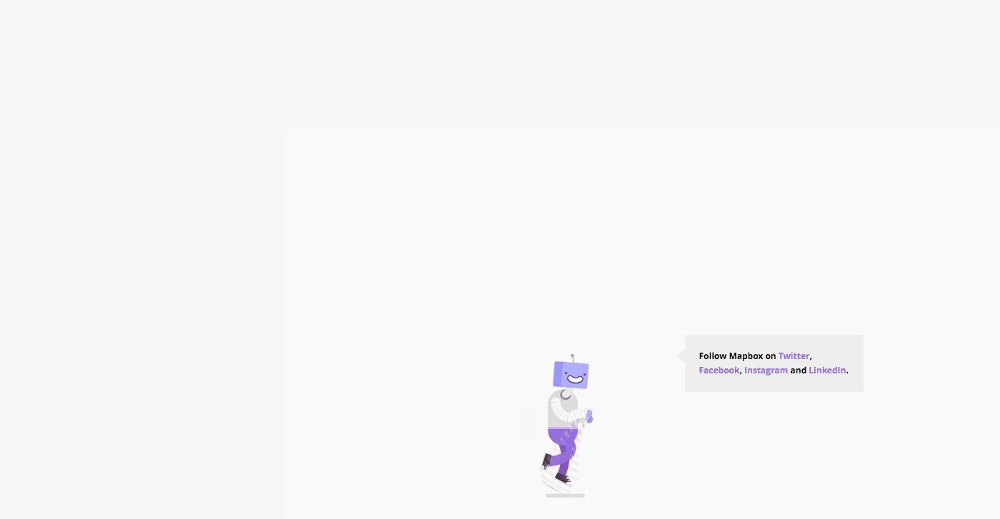
Mapbox wants to change the way people navigate cities and understand
our planet.
Mapbox does this by providing building blocks for integrating brand and location into any mobile or online app.
Directions API that provide turn by turn directions for drivers, walkers, and cyclists.
Turf.js advanced geospatial analysis for browsers and node.
Mapbox Studio leverages:
- Styles API - read and write map styles, fonts, and icons
- Uploads API - transforms geographic data sources and files into performant production-ready tilesets
- Datasets API - offers persistent storage for custom geographic data and supports adding and editing features
- Maps API - supports reading raster and vector tilesets
- Static API - returns static maps and raster tiles from styles
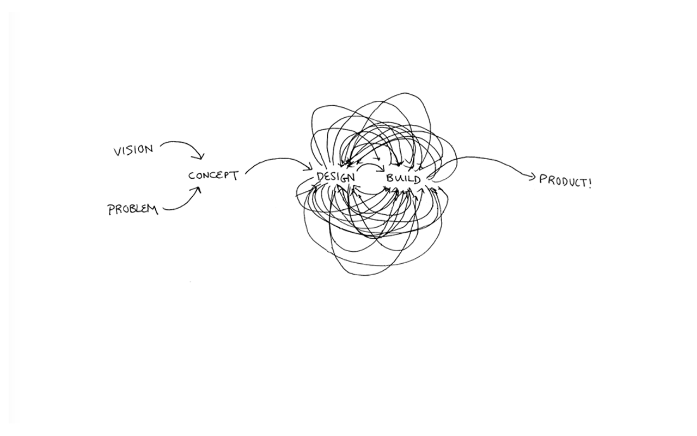
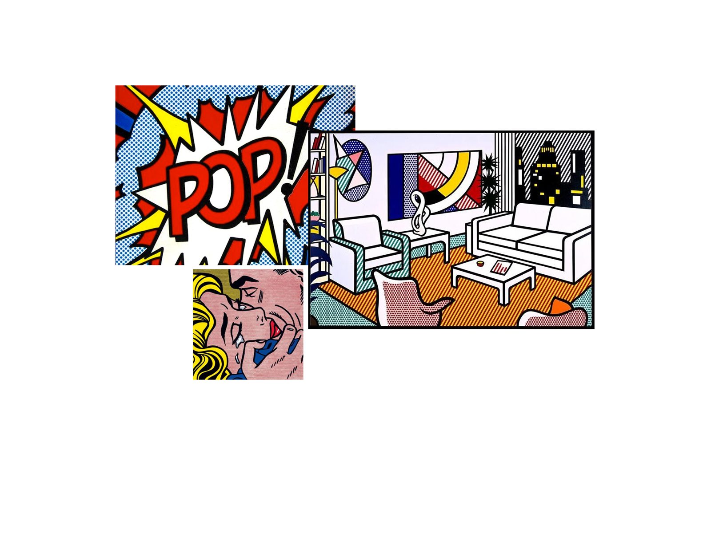
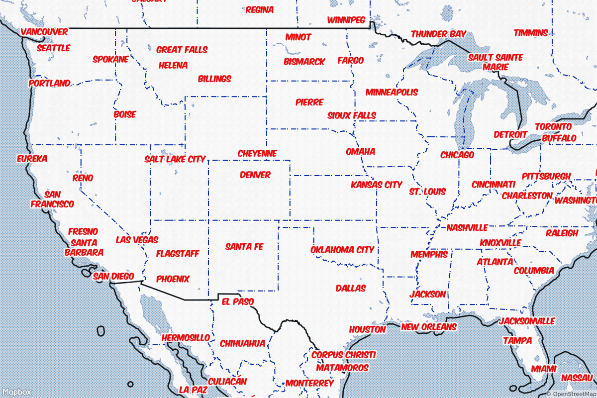
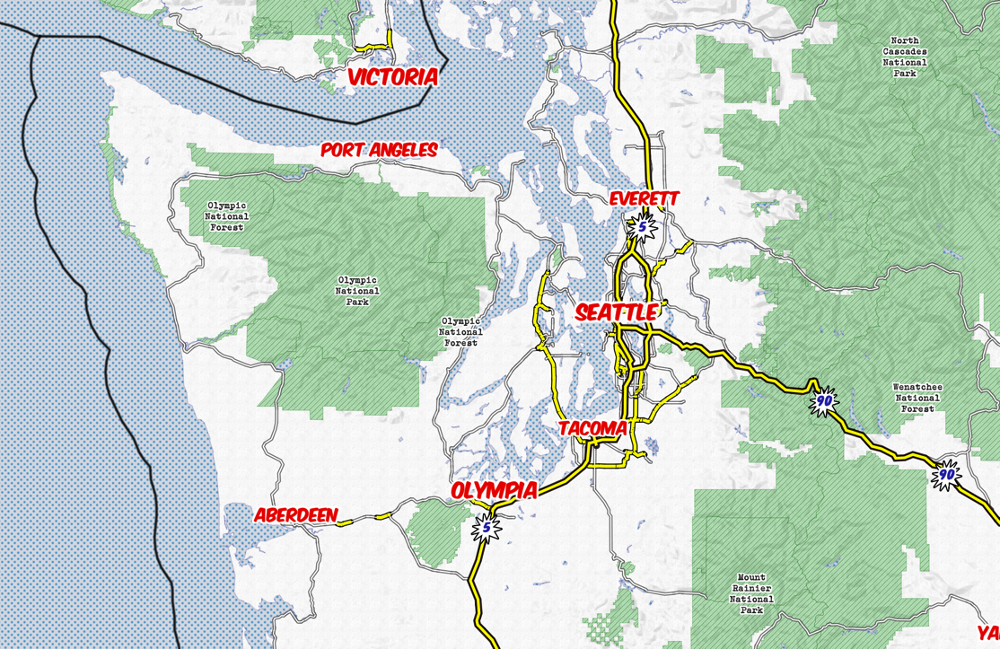
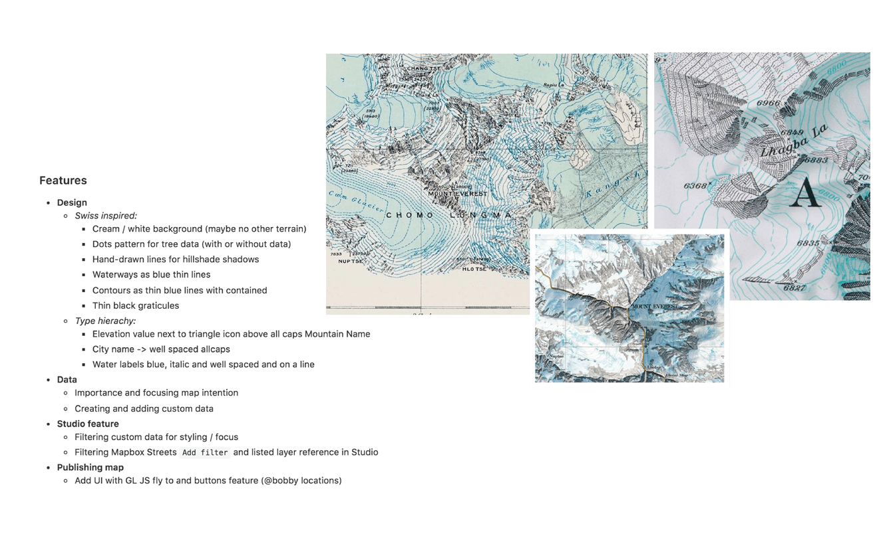
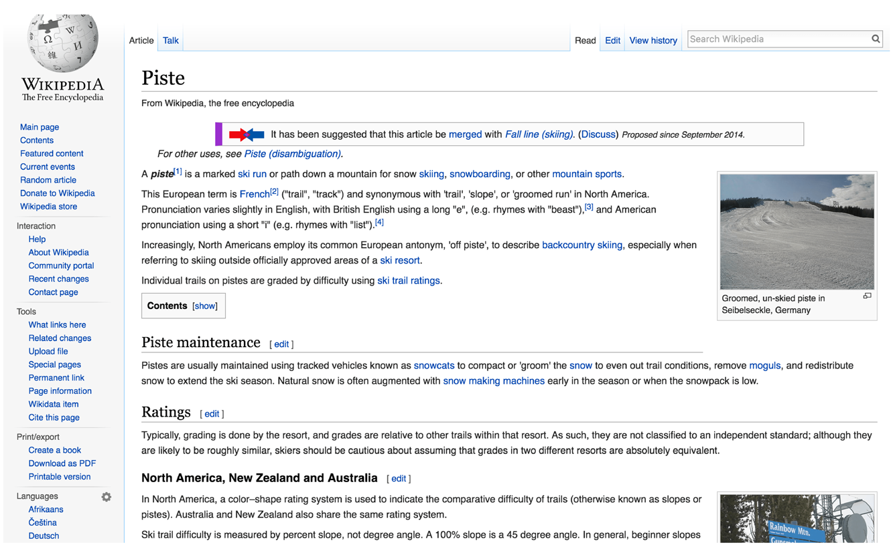
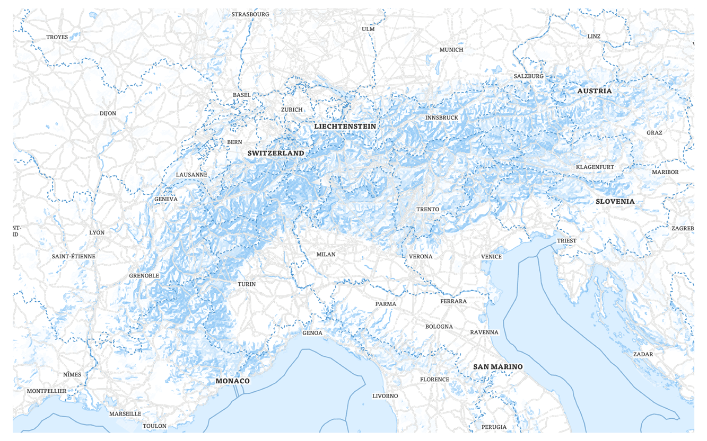
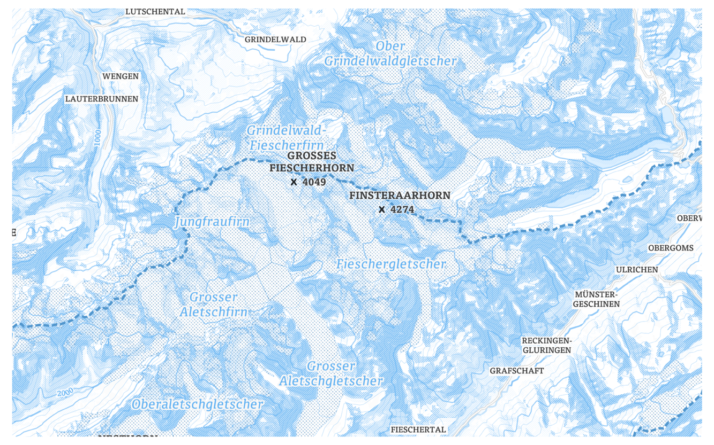
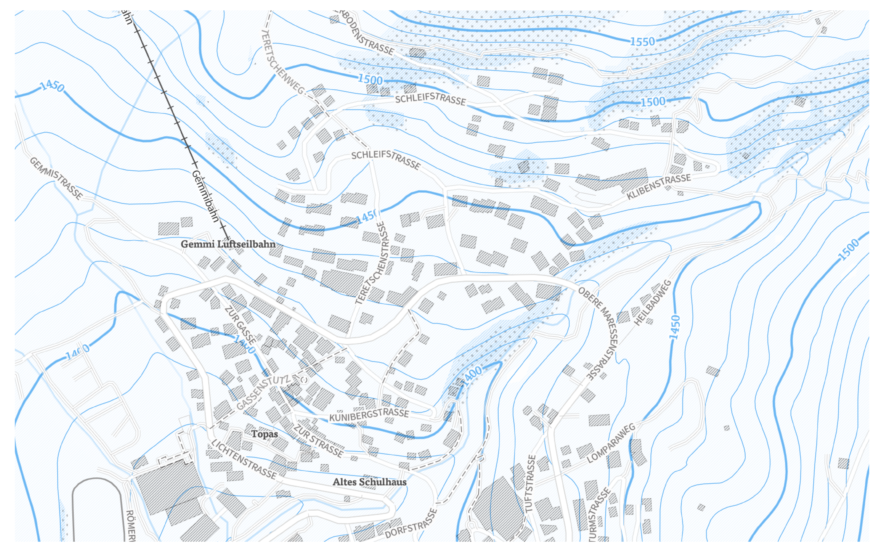
- Mapbox Streets - a complete basemap, perfect for incorporating your own custom data.
- Mapbox Outdoors - a general basemap tailored to hiking, biking, and sport.
- Mapbox Dark - simple, clean map with a dark backdrop. Well-suited for data visualizations.
- Mapbox Light - simple, clean map with a light backdrop. Well-suited for data visualizations.
- Mapbox Satellite - beautiful global satellite and aerial imagery layer.
- Mapbox Satellite Streets - global imagery enhanced with road and label hierarchy.
- Mapbox Traffic Day - traffic on a light streets basemap that highlights congestion.
- Mapbox Traffic Night - Traffic on a dark streets basemap that highlights congestion.
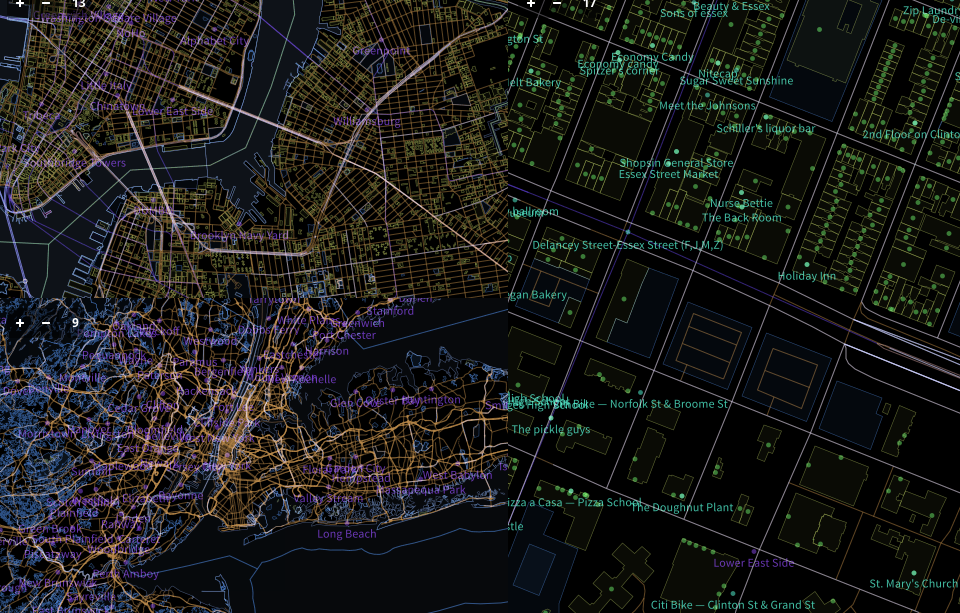
- Style background.
- Add and style water layer.
- Add and style road layer.
- Filter road layer.
- Add and style place labels.
- Filter place labels.
- Color
- Pattern/texture
- Typography
- Iconography
- Contrast
- Hierarchy
- Density
- Find colors for your map from colourlovers.com
- DEMO: Apply color palatte into Studio.
- Download svg pattern
- Add pattern to your style.
- Navigate to Maki icon editor.
- Make and download a Maki icon set for your map.
- Add maki icons to your style.
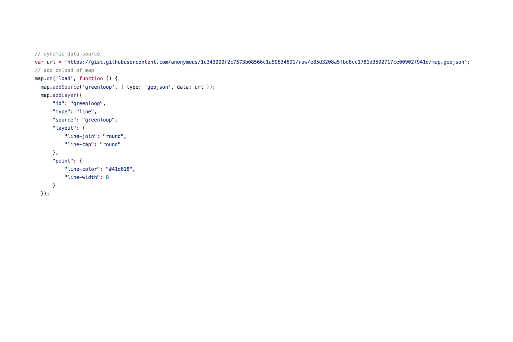


{kind=link}